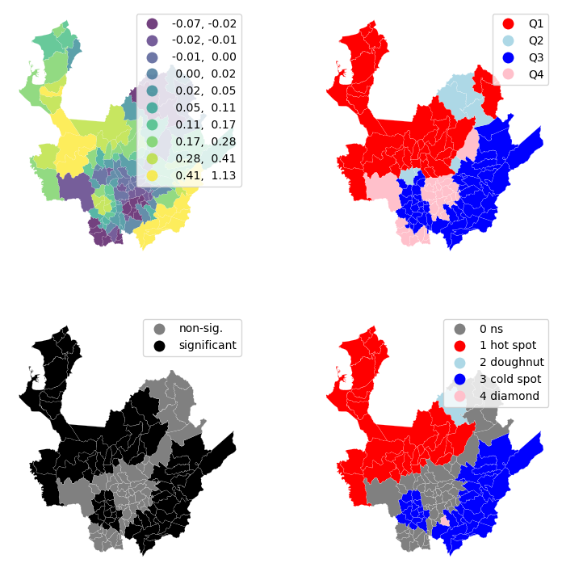
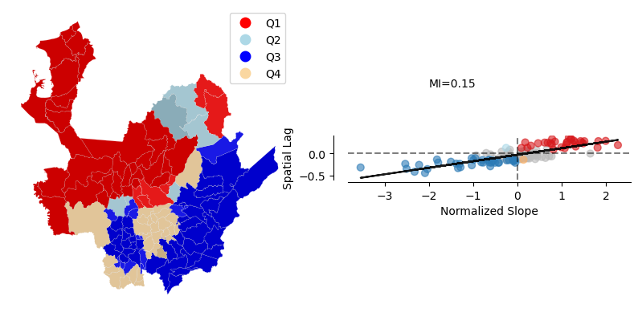
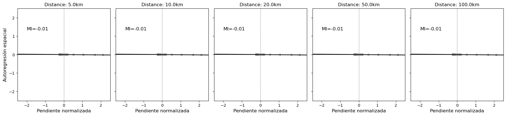

Autocorrelación Espacial#
Autocorrelación Espacial Local#
import geopandas as gpd
import requests
gdf = gpd.read_file("https://github.com/algarciach/AnalisisGeoespacial/raw/main/Covid19_model/Data/covid19_municipios_antioquia.gpkg")
gdf.info()
from libpysal.weights import DistanceBand
w_dist20km = DistanceBand.from_dataframe(gdf, 20000, binary=False)
/usr/local/Caskroom/miniforge/base/envs/geo/lib/python3.11/site-packages/scipy/sparse/_data.py:128: RuntimeWarning: divide by zero encountered in reciprocal
return self._with_data(data ** n)
import esda
from splot.esda import plot_moran
mi = esda.Moran(gdf["humedad_relativa"], w_dist20km)
plot_moran(mi)
(<Figure size 1000x400 with 2 Axes>,
array([<Axes: title={'center': 'Reference Distribution'}, xlabel='Moran I: 0.15', ylabel='Density'>,
<Axes: title={'center': 'Moran Scatterplot (0.15)'}, xlabel='Attribute', ylabel='Spatial Lag'>],
dtype=object))
from splot.esda import lisa_cluster
lisa = esda.Moran_Local(gdf["humedad_relativa"], w_dist20km)
lisa_cluster(lisa, gdf)
(<Figure size 640x480 with 1 Axes>, <Axes: >)
import matplotlib.pyplot as plt
from matplotlib.colors import ListedColormap
f, axs = plt.subplots(nrows=2, ncols=2, figsize=(9, 9))
axs = axs.flatten()
gdf["Is"]=lisa.Is
# Subplot 1 #
ax = axs[0]
gdf.plot(column='Is', cmap='viridis', scheme='quantiles', k=10, edgecolor='white', linewidth=0.1, alpha=0.75, legend=True, ax=ax)
ax.set_aspect('equal')
ax.set_axis_off()
# Subplot 2 #
ax = axs[1]
q_labels = ['Q1', 'Q2', 'Q3', 'Q4']
labels = [q_labels[i-1] for i in lisa.q]
hmap = ListedColormap([ 'red', 'lightblue', 'blue', 'pink'])
gdf.assign(cl=labels).plot(column='cl', categorical=True,k=2, cmap=hmap, linewidth=0.1, ax=ax,edgecolor='white', legend=True)
ax.set_aspect('equal')
ax.set_axis_off()
# Subplot 3 #
ax = axs[2]
sig = 1 * (lisa.p_sim < 0.05)
hmap = ListedColormap(['grey','black'])
labels = ['non-sig.', 'significant']
labels = [labels[i] for i in sig]
gdf.assign(cl=labels).plot(column='cl', categorical=True,k=2, cmap=hmap, linewidth=0.1, ax=ax,edgecolor='white', legend=True)
ax.set_aspect('equal')
ax.set_axis_off()
# Subplot 4 #
ax = axs[3]
hotspot = 1 * (sig * lisa.q==1)
coldspot = 3 * (sig * lisa.q==3)
doughnut = 2 * (sig * lisa.q==2)
diamond = 4 * (sig * lisa.q==4)
spots = hotspot + coldspot + doughnut + diamond
spot_labels = [ '0 ns', '1 hot spot', '2 doughnut', '3 cold spot', '4 diamond']
labels = [spot_labels[i] for i in spots]
hmap = ListedColormap([ 'grey', 'red', 'lightblue', 'blue', 'pink'])
gdf.assign(cl=labels).plot(column='cl', categorical=True,k=2, cmap=hmap, linewidth=0.1, ax=ax,edgecolor='white', legend=True)
ax.set_aspect('equal')
ax.set_axis_off()
plt.show()

%pip install matplotlib-scalebar
from matplotlib_scalebar.scalebar import ScaleBar
from splot.esda import moran_scatterplot
f, ax = plt.subplots(nrows=1, ncols=2,figsize=(10,5))
axs = ax.flatten()
q_labels = ['Q1', 'Q2', 'Q3', 'Q4']
labels1 = [q_labels[i-1] for i in lisa.q]
hmap = ListedColormap([ 'red', 'lightblue', 'blue', '#FAD7A0'])
gdf.assign(cl=labels1).plot(column='cl', categorical=True,k=2, cmap=hmap, linewidth=0.1, ax=ax[0],edgecolor='white', legend=True)
sig = 1 * (lisa.p_sim < 0.05)
hmap = ListedColormap(['grey','black'])
labels2 = ['non-sig.', 'significant']
labels2 = [labels2[i] for i in sig]
gdf.assign(cl=labels2).plot(column='cl', categorical=True,k=2, cmap=hmap, linewidth=0.1, ax=ax[0],edgecolor='white', alpha=0.20)
ax[0].set_aspect('equal')
ax[0].set_axis_off()
moran_scatterplot(lisa, p=0.05,ax=ax[1])
ax[1].text(-2,1.5,f'MI={round(mi.I, 2)}')
ax[1].set_xlabel("Normalized Slope")
ax[1].set_title('');

from splot.esda import plot_local_autocorrelation
plot_local_autocorrelation(lisa, gdf, 'cfr')
(<Figure size 1500x400 with 3 Axes>,
array([<Axes: title={'center': 'Moran Local Scatterplot'}, xlabel='Attribute', ylabel='Spatial Lag'>,
<Axes: >, <Axes: >], dtype=object))
import numpy as np
distance = [5000, 10000, 20000, 50000, 100000]
variable = 'densidad' # Specify the variable you want to use
# Create a single figure with subplots for different distances
f, ax = plt.subplots(nrows=1, ncols=len(distance), figsize=(18, 6), sharex=True, sharey=True) # Ajustado figsize y sharex/sharey para consistencia
for i, dx in enumerate(distance):
# Create a DistanceBand weights matrix for the specified distance
try:
w_dist = DistanceBand.from_dataframe(gdf, dx, binary=True) # Binary=True es común para Moran I
# Identify islands (disconnected components)
islands = [k for k, v in w_dist.neighbors.items() if len(v) == 0]
# Filter out islands from the GeoDataFrame
if islands:
cat_filtered = gdf.drop(index=islands)
w_dist_filtered = DistanceBand.from_dataframe(cat_filtered, dx, binary=True)
else:
cat_filtered = gdf
w_dist_filtered = w_dist
# Normalizar la matriz de pesos por fila (standard row-standardization)
w_dist_filtered.transform = 'R'
except ValueError as e:
print(f"Error al crear matriz de pesos para {dx/1000}km: {e}. Saltando este panel.")
ax[i].set_title(f'Distance: {dx/1000}km (No data/neighbors)')
ax[i].set_xlim([-2.5, 2.5])
ax[i].set_ylim([-2.5, 2.5])
ax[i].axvline(0, color='gray', linestyle='--')
ax[i].axhline(0, color='gray', linestyle='--')
continue # Skip to the next iteration
# Asegurarse de que el número de observaciones sea suficiente
if len(cat_filtered) < 2:
print(f"No hay suficientes observaciones para {dx/1000}km después de filtrar islas. Saltando este panel.")
ax[i].set_title(f'Distance: {dx/1000}km (Too few obs)')
ax[i].set_xlim([-2.5, 2.5])
ax[i].set_ylim([-2.5, 2.5])
ax[i].axvline(0, color='gray', linestyle='--')
ax[i].axhline(0, color='gray', linestyle='--')
continue
# --- CÁLCULOS PARA LA GRÁFICA DE DISPERSIÓN DE MORAN Y LA LÍNEA ---
# 1. Estandarizar la variable (Z-scores)
z = (cat_filtered[variable] - cat_filtered[variable].mean()) / cat_filtered[variable].std()
# 2. Calcular el rezago espacial (WZ)
w_z = w_dist_filtered.sparse @ z.values
# 3. Calcular el Índice de Moran Global (MI)
numerator = np.sum(z * w_z)
denominator = np.sum(z**2)
mi_global = numerator / denominator
# 4. Calcular LISA para obtener los p-valores y determinar la significancia
lisa = esda.Moran_Local(cat_filtered[variable], w_dist_filtered)
# 5. Colorear los puntos basándose en LISA (cuadrante Y significancia p<=0.05)
# Extraído de la lógica interna de splot.esda.moran_scatterplot
p_threshold = 0.05 # Umbral de significancia
# Asignar colores según los cuadrantes y la significancia
point_colors = np.array(['gray'] * len(z), dtype=object)
# Cuadrante HH (Alto-Alto) - Rojo
hh_idx = (z >= 0) & (w_z >= 0) & (lisa.p_sim <= p_threshold)
point_colors[hh_idx] = 'red'
# Cuadrante LL (Bajo-Bajo) - Azul Oscuro
ll_idx = (z < 0) & (w_z < 0) & (lisa.p_sim <= p_threshold)
point_colors[ll_idx] = 'darkblue'
# Cuadrante HL (Alto-Bajo) - Naranja
hl_idx = (z >= 0) & (w_z < 0) & (lisa.p_sim <= p_threshold)
point_colors[hl_idx] = 'darkorange'
# Cuadrante LH (Bajo-Alto) - Azul Claro
lh_idx = (z < 0) & (w_z >= 0) & (lisa.p_sim <= p_threshold)
point_colors[lh_idx] = 'lightskyblue'
# Los puntos no significativos (grises) ya están asignados por defecto si no cumplen las condiciones anteriores.
# --- 6. Graficar los puntos (manualmente) ---
ax[i].scatter(z, w_z, s=20, c=point_colors, alpha=0.6)
# --- 7. Dibujar la línea de regresión MANUALMENTE (la única línea negra) ---
x_line = np.array([-2.5, 2.5])
y_line = mi_global * x_line
ax[i].plot(x_line, y_line, color='k', linestyle='-', linewidth=2)
# --- El resto de tu código para etiquetas y formato ---
ax[i].text(-2, 1.5, f'MI={mi_global:.2f}', fontsize=12, horizontalalignment='left', verticalalignment='top')
ax[i].set_xlabel('Pendiente normalizada', fontsize=12)
if i == 0:
ax[i].set_ylabel("Autoregresión espacial", fontsize=12)
else:
ax[i].set_ylabel("")
ax[i].set_title(f'Distance: {dx/1000}km')
# Set consistent limits and aspect for the scatterplot
ax[i].set_xlim([-2.5, 2.5])
ax[i].set_ylim([-2.5, 2.5])
ax[i].set_aspect('equal', adjustable='box') # CRUCIAL para una visualización correcta de la pendiente
# Añadimos líneas de referencia
ax[i].axvline(0, color='gray', linestyle='--', linewidth=0.8)
ax[i].axhline(0, color='gray', linestyle='--', linewidth=0.8)
# Ajustar el layout y guardar la figura
plt.tight_layout(rect=[0, 0.03, 1, 0.95]) # Ajusta el layout para que el título principal no se solape
